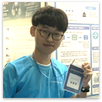

I'm Dong-Hyun Sim, Undergraduate at Sejong Univ. majoring in IME(Intelligent Mechatronics Engineering). Since 2017.
I have a big interest in AI(Artificial Intelligence) especially Deep Learning, IoT(Internet of Things), Embedded System, 3D Printing, 3D Modeling and EVERYTHING THAT MAKES MY HEART BEATING!
Contact to me
As e-mail : sdh (at) kakao.com